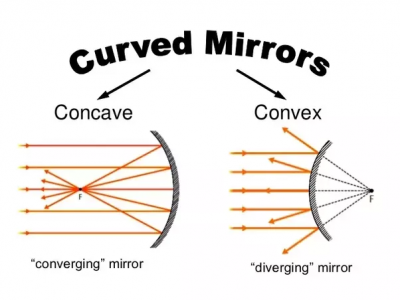
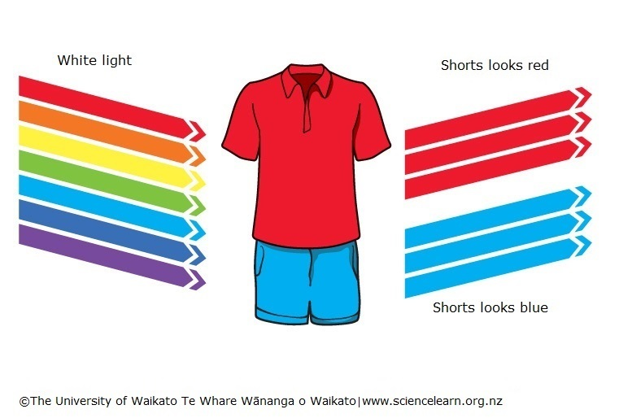
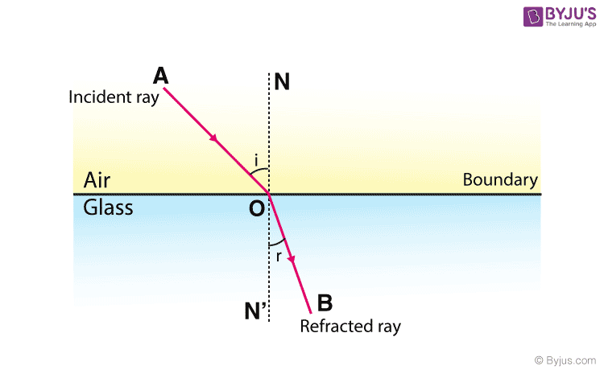

Light, or Visible Light, commonly refers to electromagnetic radiation that can be detected by the human eye. The entire electromagnetic spectrum is extremely broad, ranging from low energy radio waves with wavelengths that are measured in meters, to high energy gamma rays with wavelengths that are less than 1 x 10-11 meters. Electromagnetic radiation, as the name suggests, describes fluctuations of electric and magnetic fields, transporting energy at the Speed of Light (which is ~ 300,000 km/sec through a vacuum). Light can also be described in terms of a stream of photons, massless packets of energy, each travelling with wavelike properties at the speed of light. A photon is the smallest quantity (quantum) of energy which can be transported, and it was the realization that light travelled in discrete quanta that was the origins of Quantum Theory.
A mirror is an object that reflects an image. Light that bounces off a mirror will show an image of whatever is in front of it, when focused through the lens of the eye or a camera. Mirrors reverse the direction of the image in an equal yet opposite angle from which the light shines upon it. There are two types of mirrors - concave and convex mirrors. Also, there is plane mirror, the type of mirror that we come across most in our daily lives.
Visible light is the small part within the electromagnetic spectrum that human eyes are sensitive to and can detect. Visible light waves consist of different wavelengths. The colour of visible light depends on its wavelength. These wavelengths range from 700 nm at the red end of the spectrum to 400 nm at the violet end. Objects appear different colours because they absorb some colours (wavelengths) and reflected or transmit other colours. The colours we see are the wavelengths that are reflected or transmitted. For example, a red shirt looks red because the dye molecules in the fabric have absorbed the wavelengths of light from the violet/blue end of the spectrum. Red light is the only light that is reflected from the shirt. If only blue light is shone onto a red shirt, the shirt would appear black, because the blue would be absorbed and there would be no red light to be reflected. White objects appear white because they reflect all colours. Black objects absorb all colours so no light is reflected.
Light rays change direction when they reflect off a surface, move from one transparent medium into another, or travel through a medium whose composition is continuously changing. The law of reflection states that, on reflection from a smooth surface, the angle of the reflected ray is equal to the angle of the incident ray. (By convention, all angles in geometrical optics are measured with respect to the normal to the surface—that is, to a line perpendicular to the surface.) The reflected ray is always in the plane defined by the incident ray and the normal to the surface. The law of reflection can be used to understand the images produced by plane and curved mirrors. Unlike mirrors, most natural surfaces are rough on the scale of the wavelength of light, and, as a consequence, parallel incident light rays are reflected in many different directions, or diffusely. Diffuse reflection is responsible for the ability to see most illuminated surfaces from any position—rays reach the eyes after reflecting off every portion of the surface.
When light traveling in one transparent medium encounters a boundary with a second transparent medium (e.g., air and glass), a portion of the light is reflected and a portion is transmitted into the second medium. As the transmitted light moves into the second medium, it changes its direction of travel; that is, it is refracted. The law of refraction, also known as Snell’s law, describes the relationship between the angle of incidence (θ1) and the angle of refraction (θ2).
